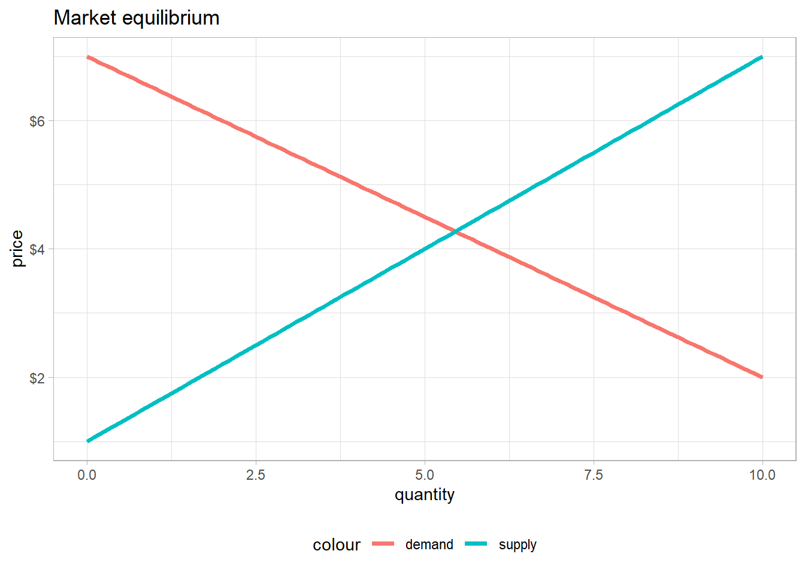
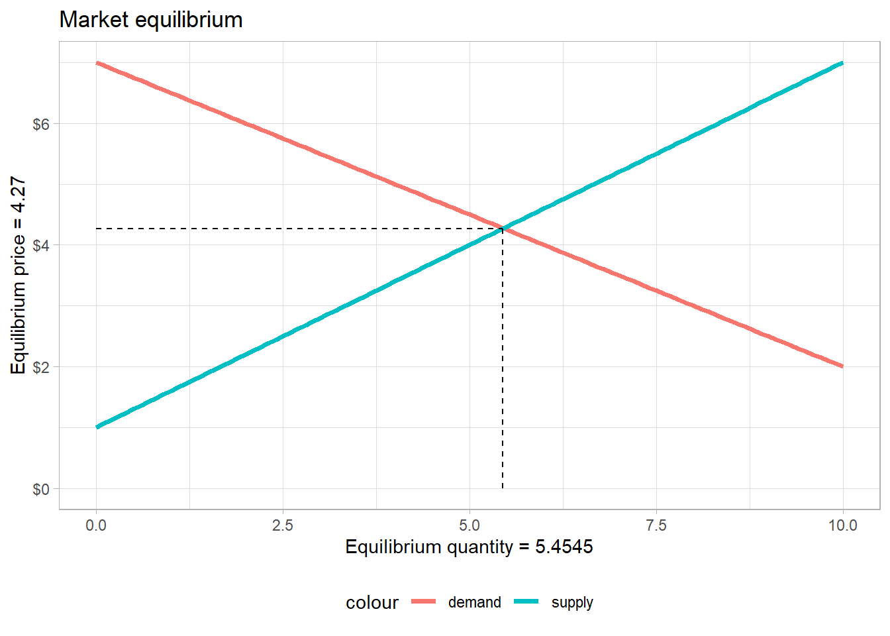

demand <- function(p) 7 - (0.5*p)
supply <- function(p) 1 + 0.6*p1 Introduction: Market Equilibrium
This website is guide to mainstream and heterodox economics constructed from my personal notes from a variety of bachelor and master level economics courses. goal is to provide summaries of important topics in neoclassical and heterodox economics. Since having some background in mainstream economics is crucial to understand the heterodox and Post-Keynesian economics, mainly because the latter are constructed partly as a response and critic of mainstream-neoclassical economics, the present introduction will summarize the basics of neoclassical production theory, consumer theory and market equilibrium.
Let’s first recall what market equilibrium is, because it is one of the most important concept in economics.
1.1 Market equilibrium
1.1.1 What is a market?
Market equilibrium is perhaps the most important element of neoclassical theory. Every introductory mainstream textbooks start with market equilibrium. Acemoglu, Laibson, and List (2017) defines a market as:
“A group of economic agents who are trading a good or service plus the rules and arrangements for trading” (Acemoglu, Laibson, and List 2017, 59).
The definition given by Pindyck and Rubinfeld (2013) is more precise:
“Market: Collection of buyers and sellers that, through their actual or potential interactions, determine the price of a product or set of products” (Pindyck and Rubinfeld 2013, 8).
Stated simply, market equilibrium tells what will be the price of any object or service, as long as the latter are turned into commodities. Market equilibrium explains not only the equilibrium level of prices and commodities of any good or service, but also the change in prices resulting from exogenous shocks (change in income, confidence, technology…).
A market is thus a place (material or not) where an object or service turned into a commodity is offered by suppliers and demanded by consumers and thus traded when an agreement is reached over the price which will determine the value of the traded commodity.
1.1.2 Markets under perfect competition
But there are many types of markets. Microeconomics generally starts with an ideal-type market: the perfectly competitive market. The latter refers to any market in which there are a large number of suppliers as well as large number of consumers. An important characteristic of perfectly competitive markets is that suppliers and consumers think that they cannot manipulate or have an influence over the market price. Market price is thus considered as given and fixed by the market when demand equates supply, as we will see below.
1.1.3 Demand, Supply, Equilibrium
Consumers’ total demand for a commodity constitutes the overall market demand for that commodity. Demand is considered to be negatively related to the price of that commodity: the higher the price, the lower the demand. On the other hand, firms’ supply of the commodity is a positive function of price. The higher the price, the higher the profits for any level of production, hence higher incentive to increase production and supply more quantity.
Let’s now take an example: suppose that the demand for grain follows a negative linear function.
\(Q_{demand} = 7-0.5p\)
That means that the quantity demanded for grains decreases if the price for grain increases and vice and versa. The slope of the demand curve, \(-0.5\), means that when the price increases by one, the quantity demanded decreases by 0.5.
Moreover, let’s say that the quantity supplied for grains is a positive linear function of prices for grain: the higher the price, the more are firms willing to supply grains.
\(Q_{supply} = 1+0.6p\)

To find the equilibrium price and quantity, we equate the demand and supply functions and solve for q:
\[ q_{demand} = 7- 0.5p \] \[ q_{supply} = 1 + 0.6p \]
\[ q_{demand} = q_{supply} \]
\[ 7 - 0.5p = 1 + 0.6p \]
\[ 6-0.11p = 0 \]
\[ p^* = 6/1.1 = 5.45 \]
The equilibrium price level is thus \(p^* = 5.45\). To find the equilibrium quantity, we simple put the value of the equilibrium price (5.45) into either the supply or demand function: \(7-0.5 \times 5.45 = 4.275 = p^*\)
It is easy to check directly if the computation is correct in r:
equilibrium <- curve_intersect(demand, supply, empirical = FALSE, domain = c(1,10))
equilibrium$x
[1] 5.454545
$y
[1] 4.272727
At equilibrium, economists say that “the market clears”. In other words, when equilibrium is reached all commodities are sold, every suppliers have sold their commodities and every consumers have purchased one.
1.1.4 Deviations from market price
If the price was lower than the market price, for instance after a price control policy (think for example of all the debates about energy price since covid and the war), there would be excess demand. Every commodity would be sold, but there would still be consumers who want to consume the good, but cannot because suppliers do not want to increase production because the price is too low.
Conversely, if the price was above the market price, there would be a situation of excess supply. Firms supply a large quantity of commodities since the price is relatively very high, but not all commodities would be sold because some consumers would think that the price is too high for them.
1.1.5 Change in equilibrium prices
Finally, change in market price happens each time either the supply curve or the demand curve shift to the right (positive shock) or to the left (negative shock).
Regarding demand curve shifts, (Acemoglu, Laibson, and List 2017, 67) give five factors:
- Tastes and preferences
- Income and wealth
- Availability and prices of related goods
- Number and scale of buyers
- Buyers’ beliefs about the future
And four factors for shifts in supply curve (Acemoglu, Laibson, and List 2017, 73):
- Prices of inputs used to produce the good
- Technology used to produce the good
- Number and scale of sellers
- Sellers’ beliefs about the future
But how did neoclassical theory arrive to this kind of model of equilibrium price and quantity determination? To understand better this model, we need to know why we have this positive supply curve and this negative demand curve. We will first investigate consumer choice theory, which is behind the negative demand curve, and then production theory, which is behind the positive supply curve.
Acemoglu, Daron, David Laibson, and John A. List. 2017. Microeconomics. 2nd ed. Always Learning. Pearson. http://gen.lib.rus.ec/book/index.php?md5=AE81E7B4B1AF2925CE54FC864B30482A.
Pindyck, Robert S., and Daniel L. Rubinfeld. 2013. Microeconomics. 8th ed. The Pearson Series in Economics. Boston: Pearson.